Полезные материалы про саморезы, гвозди, покрытия и закупку крепежа. Читайте и переходите в каталог GETSTUFF.
Чем саморез со сверлом отличается от острого наконечника, для какой толщины металла брать и когда достаточно обычного крепежа.
Читать →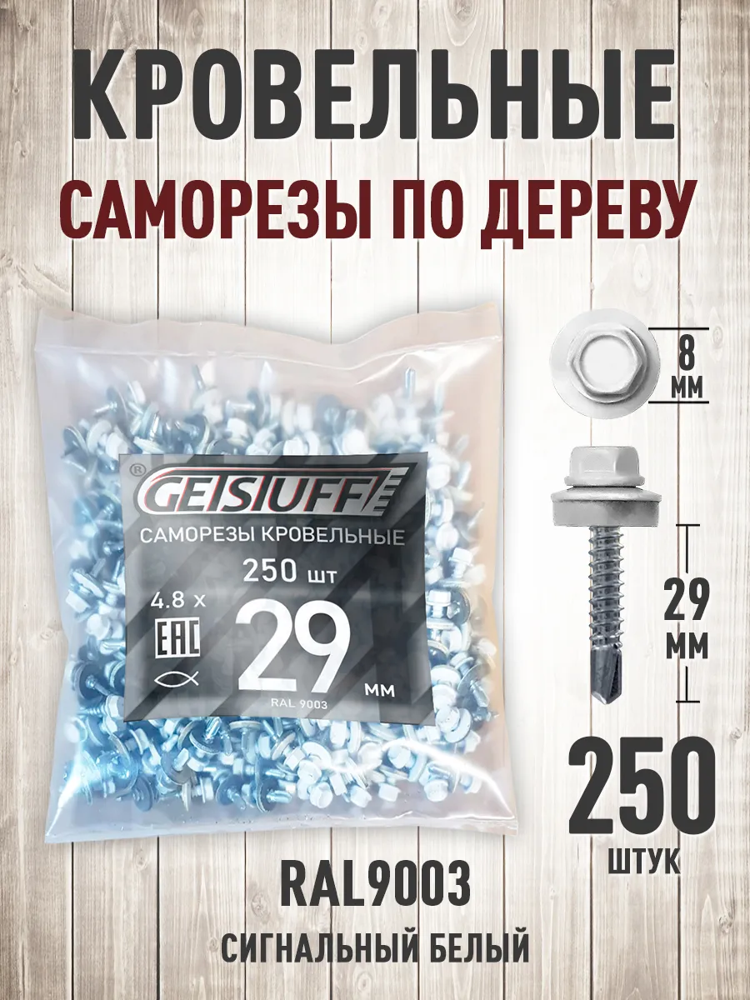
Как подобрать крепёж под сэндвич-панели: длина через утеплитель, шайба, сверло, запас на объект и контроль затяжки.
Читать →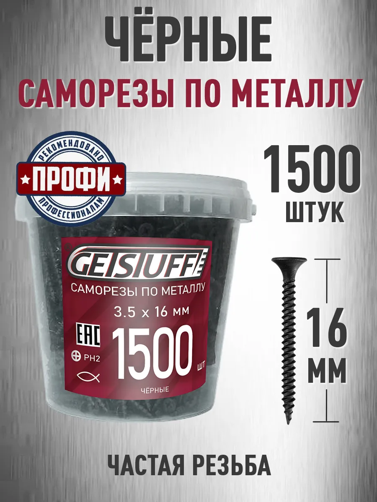
Сравнение каналов покупки крепежа: когда выгоднее сайт со скидкой к WB, а когда маркетплейс из‑за скорости доставки.
Читать →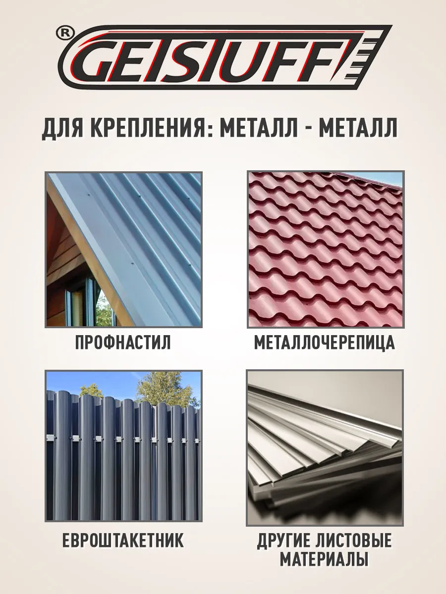
Какие саморезы брать для забора из профлиста: размер, RAL, сверло, расход на лист и на 1 м². Практичный расчёт для бригады и опта.
Читать →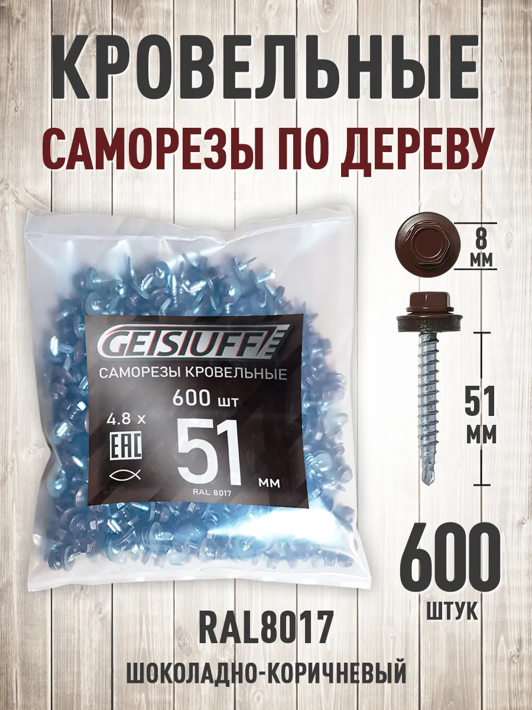
Нормы расхода саморезов на профлист: сколько штук на 1 м² для кровли, забора и фасада, формула расчёта и запас на брак.
Читать →Тренд 2026: покупатели выбирают крепёж не только по цене. Как покрытие, EPDM и стабильность партии влияют на срок службы кровли и забора.
Читать →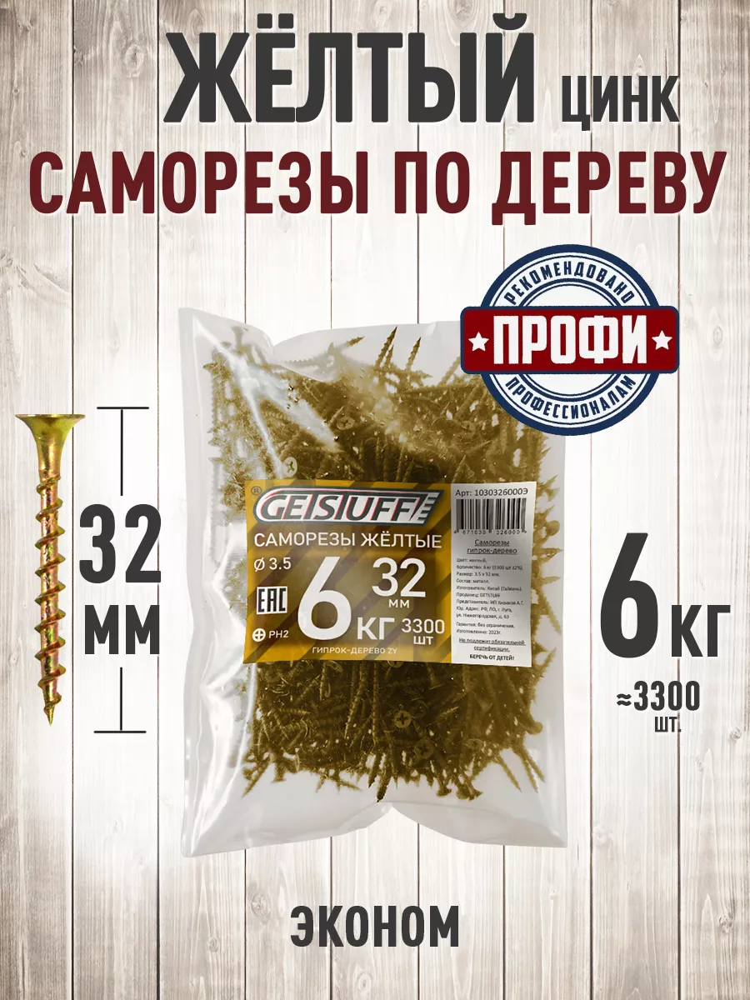
Разбираем маркировку саморезов по дереву, жёлтый цинк и чёрный фосфат, типичные размеры 3,5 и 4,2 мм. Советы для мастеров и опта.
Читать →Объясняем маркировку RAL у кровельных саморезов, роль EPDM-прокладки и как подобрать крепёж под металлочерепицу и профлист.
Читать →Сравнение резьбы, наконечника и применения саморезов по металлу и по дереву. Когда нельзя заменить один тип другим.
Читать →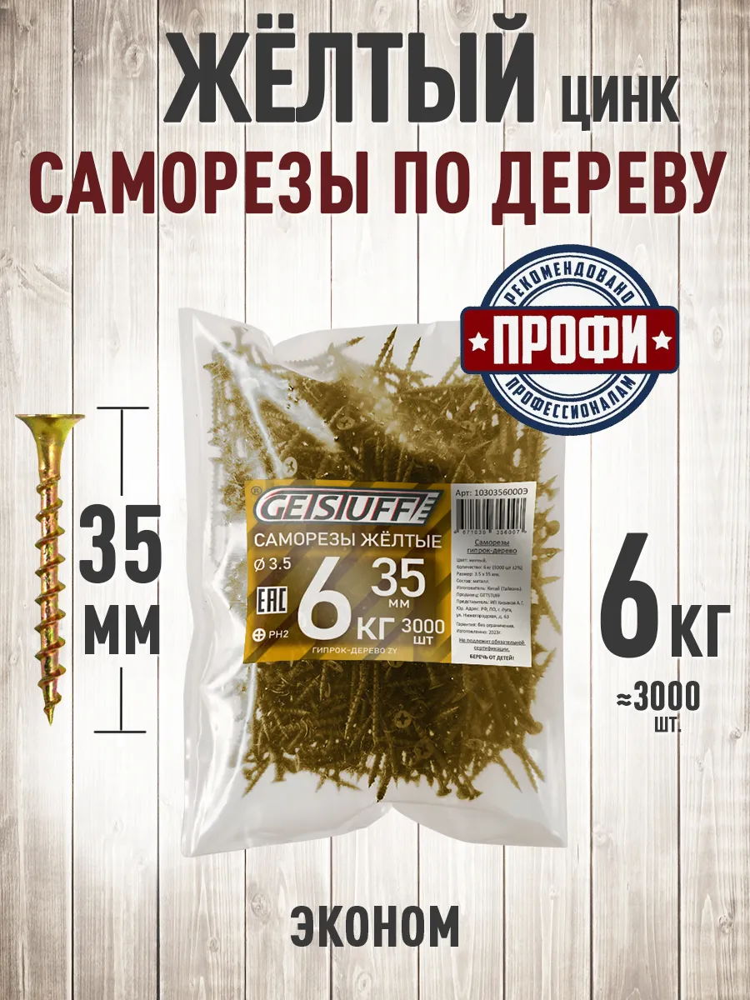
Сравнение покрытий саморезов: жёлтый цинк и чёрный фосфат — влага, внешний вид, отделка, цена.
Читать →Признаки нормального самореза: геометрия, покрытие, шлиц, упаковка. На что смотреть при приёмке партии.
Читать →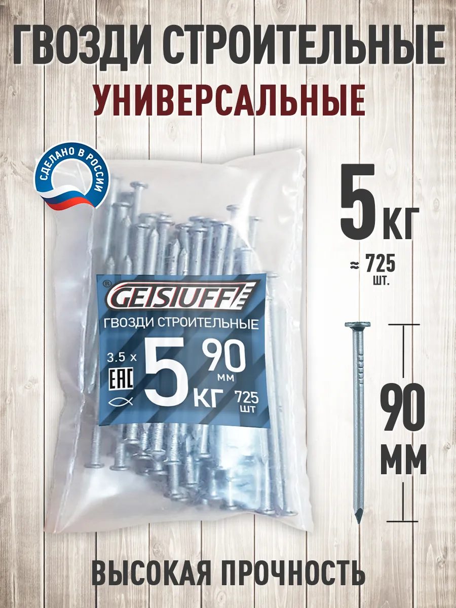
Какие размеры строительных гвоздей бывают, для каких работ выбирать длину и диаметр, фасовка в кг.
Читать →Розница, опт и крупный опт GETSTUFF: пороги суммы и штук, когда закупать коробками выгоднее маркетплейса.
Читать →Какие саморезы использовать для ГКЛ и ГВЛ к дереву и металлу, длина, покрытие, типичные ошибки монтажа.
Читать →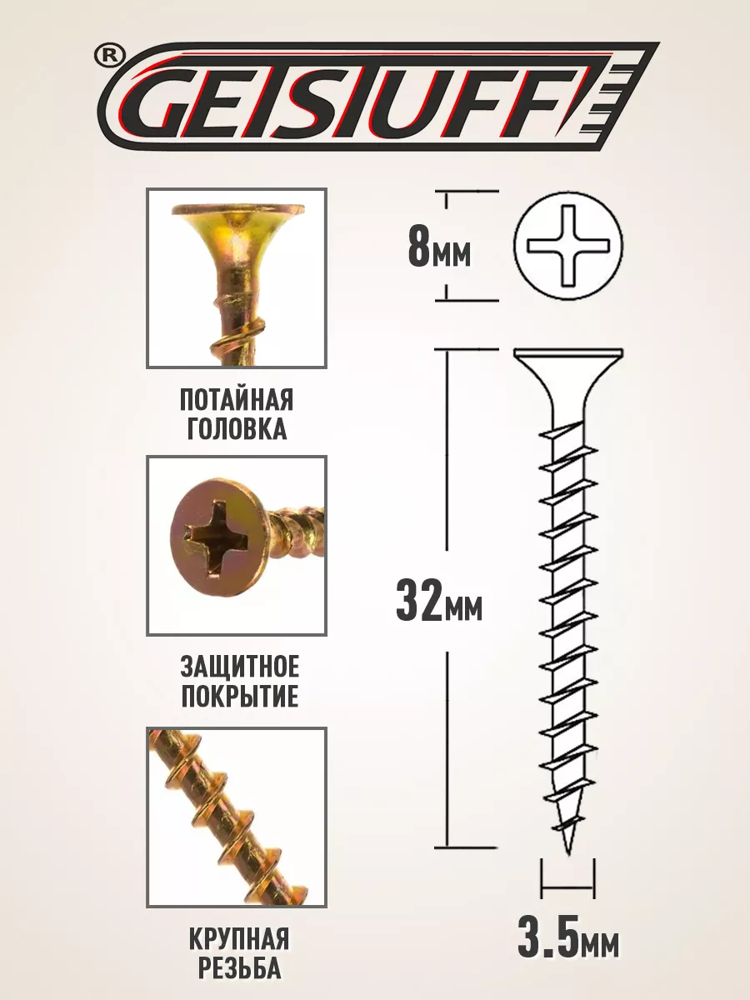
Как понять, где длина, а где диаметр в названии самореза. Примеры 45×3,5 и 4,8×29, фильтры в каталоге.
Читать →Роль EPDM в кровельном крепеже, как правильно затягивать, признаки износа и замены.
Читать →Причины коррозии крепежа: покрытие, среда, ошибки хранения. Что выбрать для влажных зон.
Читать →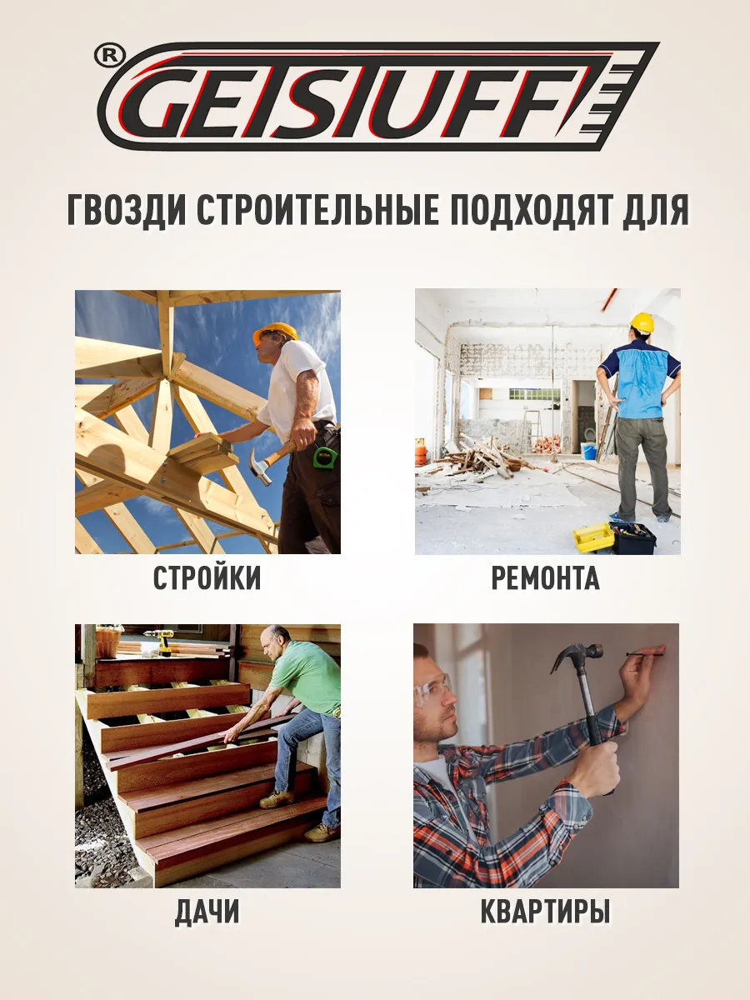
Когда выгоднее фасовка в кг и когда в штуках. Как считать расход для сметы и опта.
Читать →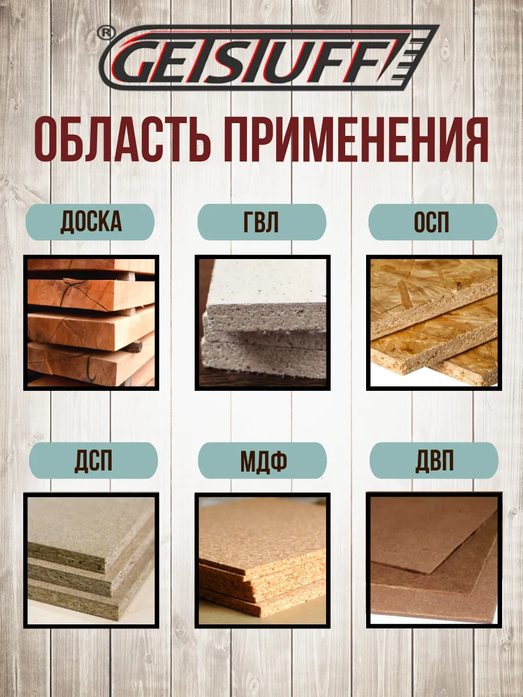
Особенности крепежа плитных материалов: раскол, длина, предварительное засверливание, типичные размеры.
Читать →Как выбрать кровельные саморезы под металлочерепицу и профлист: длина, RAL, шаг крепления, типичные ошибки.
Читать →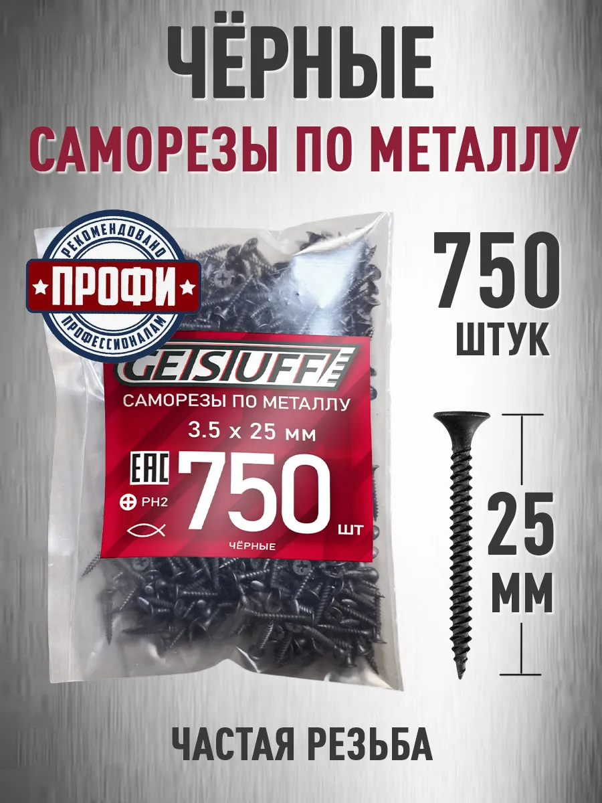
Как в быту и в закупках используют слова «шуруп» и «саморез», что писать в заявке поставщику.
Читать →Простая методика расчёта расхода саморезов: шаг крепления, запас, пример для обрешётки и обшивки.
Читать →Сравнение покупки на сайте и на Wildberries: цена, сроки, когда что выбрать.
Читать →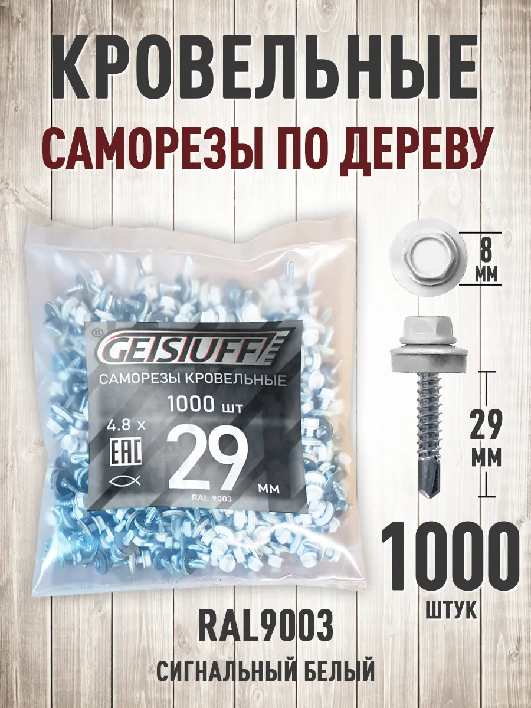
Типичные ошибки закупки кровельного крепежа: цвет, длина, перетяжка, подделка шайбы, смешение типов.
Читать →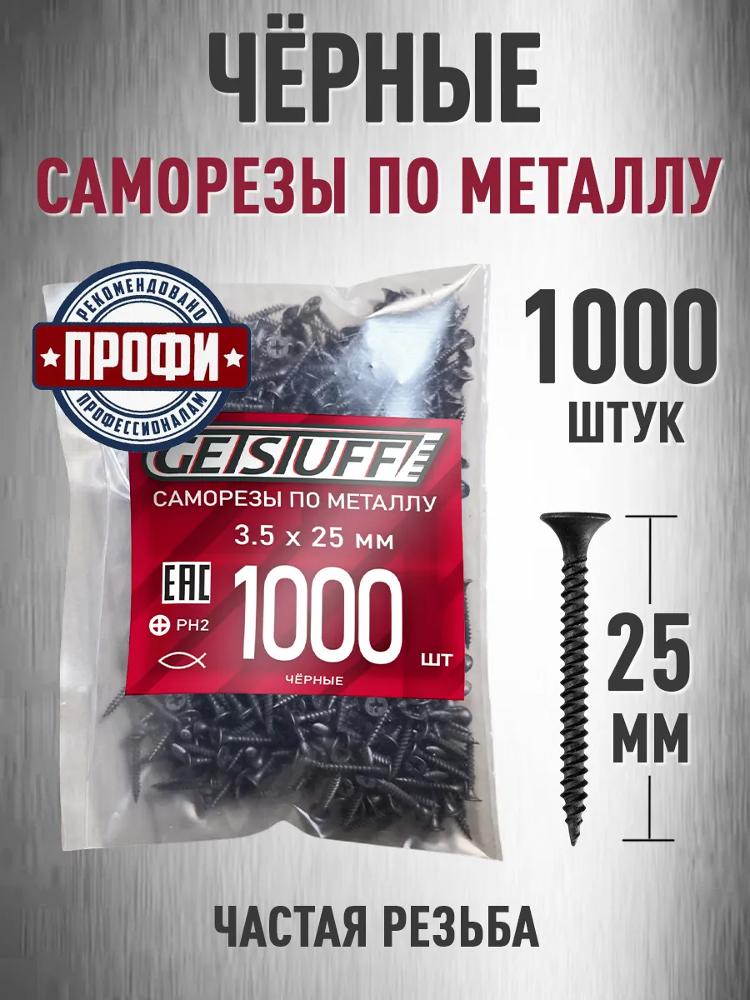
Сравнение ходовых диаметров 3,5 и 4,2 мм для дерева и отделки. Что держать на складе бригады.
Читать →Готовый чек-лист: размеры, покрытие, запас, канал покупки сайт/WB, опт. Чтобы не остановиться на объекте.
Читать →